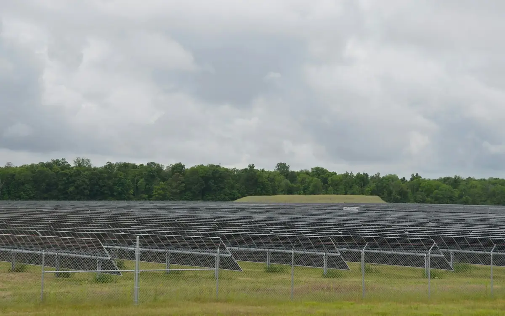
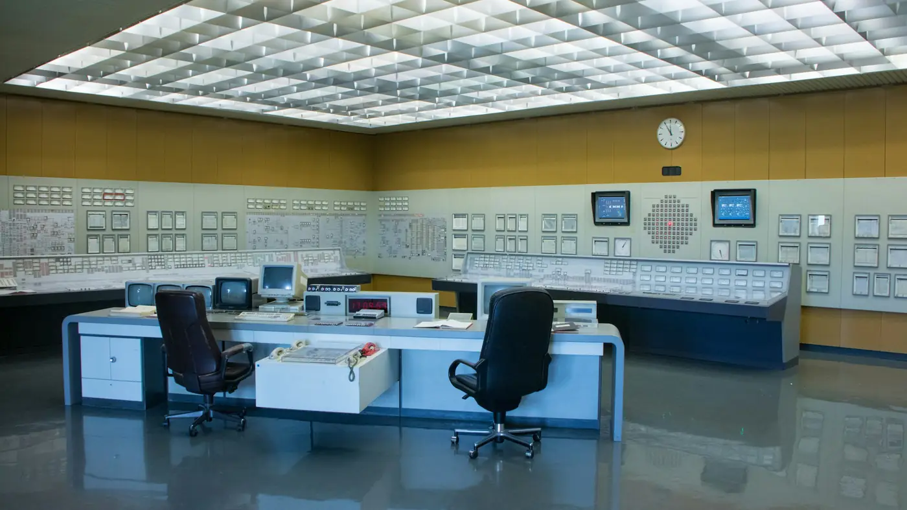

One morning at Site A
Sunday 22 March 2026, at a 55 kW plant on the Black Sea coast. Grey skies until late morning, then a short burst of sun. The model never saw this day during training. Drag the clock and see what it forecast at each hour, next to what really happened.

Does it beat the simple rules?
Any solar forecast has two free tricks to beat first: assume the next hours look like the last one, or use the average for that month and hour. Here the model is compared with whichever trick did better, on months it never trained on. Shorter bars mean smaller errors.
Error is the typical miss as a share of plant size, on daylight hours. The model helps most 2 to 6 hours out. A day ahead it is barely better than the monthly average, because it has no weather forecast to lean on.

What the operator gets
Everything is in kilowatts and plain sentences.
- A one-screen overview
- Output now, the next hour, the change over 3 hours and active alerts, with one line on where output is heading and why.
- Alerts that explain themselves
- When, how many kW, why it fired, what to check, and how often that alert was right before.
- Weather and reasons
- Measured sunlight, cloud and temperature, and which factors push each hour's forecast up or down.
- A health check
- Missing data, stuck meters, and how the forecast has done over the last 30 days.
Where it falls short
Worth knowing before trusting it with a real grid.
- Most sudden drops still surprise it. It caught 18 % of cloud-driven drops at the Black Sea plant and none at Alice Springs. A cloud is invisible to it until output starts to fall.
- The likely range is a bit too narrow. It should hold the real value 8 times in 10. In testing it managed 7 to 8.5.
- No weather forecast goes in. With the real weather for the hour ahead, its error at Alice Springs drops to about 2 %. That gap is the value of a good forecast feed.
- It replays the past. The dashboard steps through 2025 and 2026 data. It isn't connected to a live plant yet.
How it works
No step peeks at the future. Everything the forecaster uses would have been known at the moment it made the forecast.
- Tidy the readingsFive-minute meter data averaged into hours. Short gaps filled, long gaps left empty, nights set aside.
- Work out the sunWhere the sun is each hour and how much a cloudless sky would give, so clouds stand out.
- Learn from the pastRecent output, the same hour yesterday, the weather so far and the time of year.
- Give a rangeA low, middle and high estimate for each horizon, not a single number.
- Warn earlyFour simple alerts, each checked against what really happened.
Plain questions
Is this connected to a live solar plant?
Not yet. The data ends in 2026, so the dashboard has a replay clock. You choose "now", the forecaster only sees data up to that hour, and the real output afterwards is drawn so you can judge it.
What does the shaded band mean?
It's the likely range. Output should land inside it about 8 times out of 10. On test data the real figure was slightly lower, so leave a little extra margin on the low side.
Why does the dashboard take a while to open?
It's on free hosting that sleeps after a few quiet days. The first visit wakes it up, which takes about a minute. After that it responds in a second or two.
Which plants does it cover?
Two: an 18 kW plant near Alice Springs in central Australia, with 26 months of data, and a 55 kW plant on the Black Sea coast with 18 months. The locations were worked out from the data itself, from when the sun peaks and how day length changes.
Can it tell me to switch something on or off?
No. It gives advice only. Decisions stay with the operator, and it never sends commands to the grid.
Try that cloudy morning yourself
The dashboard opens straight at 11:00 on 22 March, just before the drop. Step the clock forward and watch the alert fire.